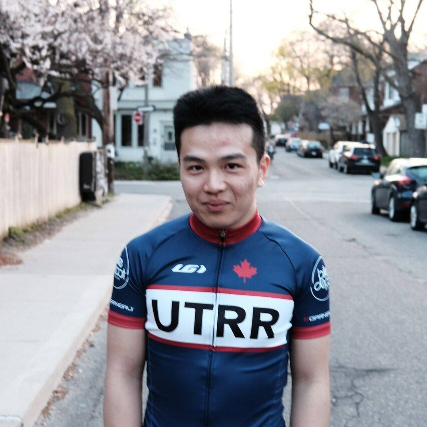
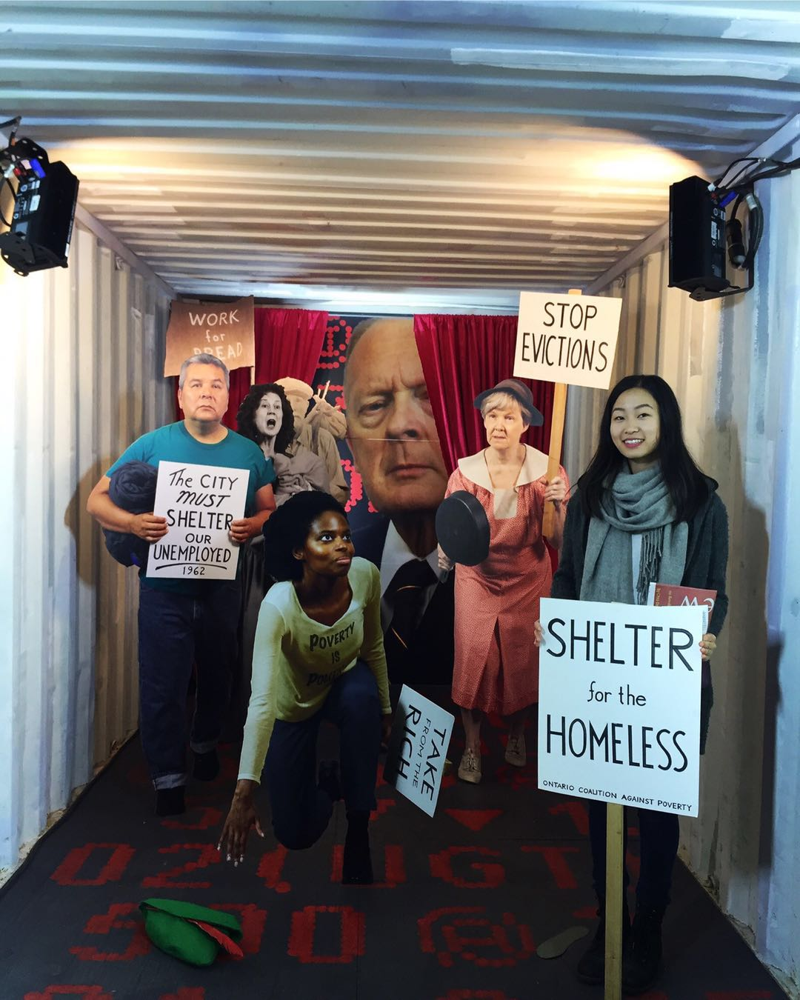
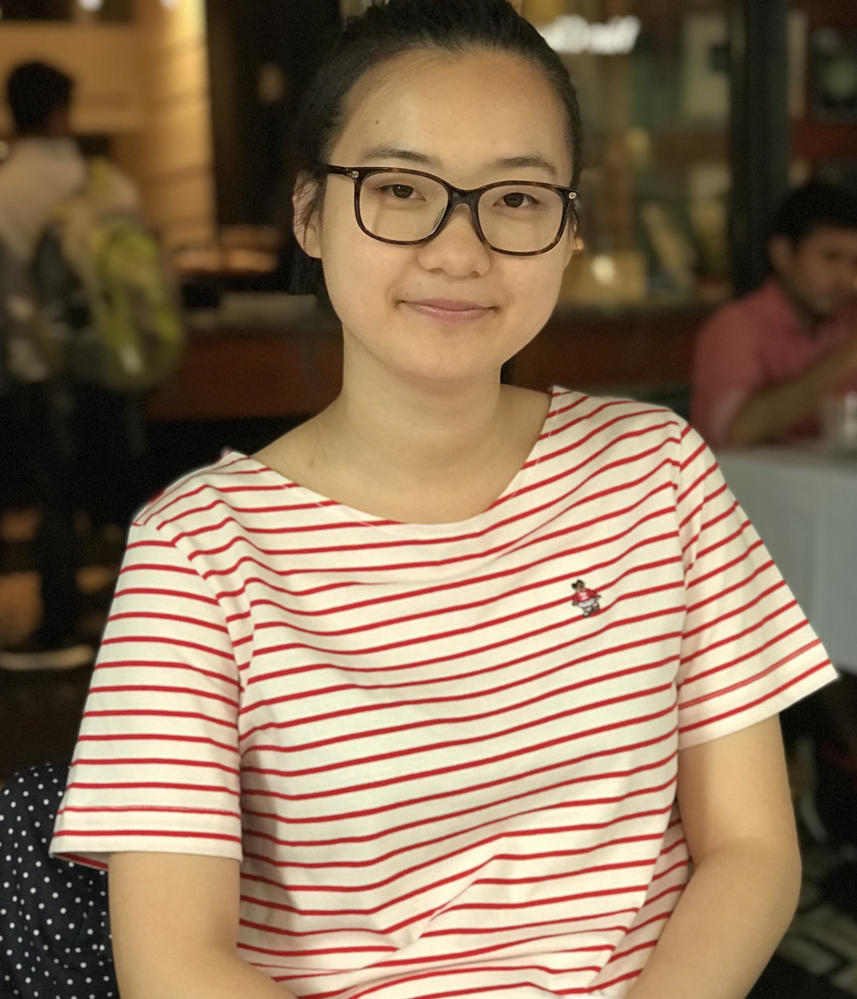
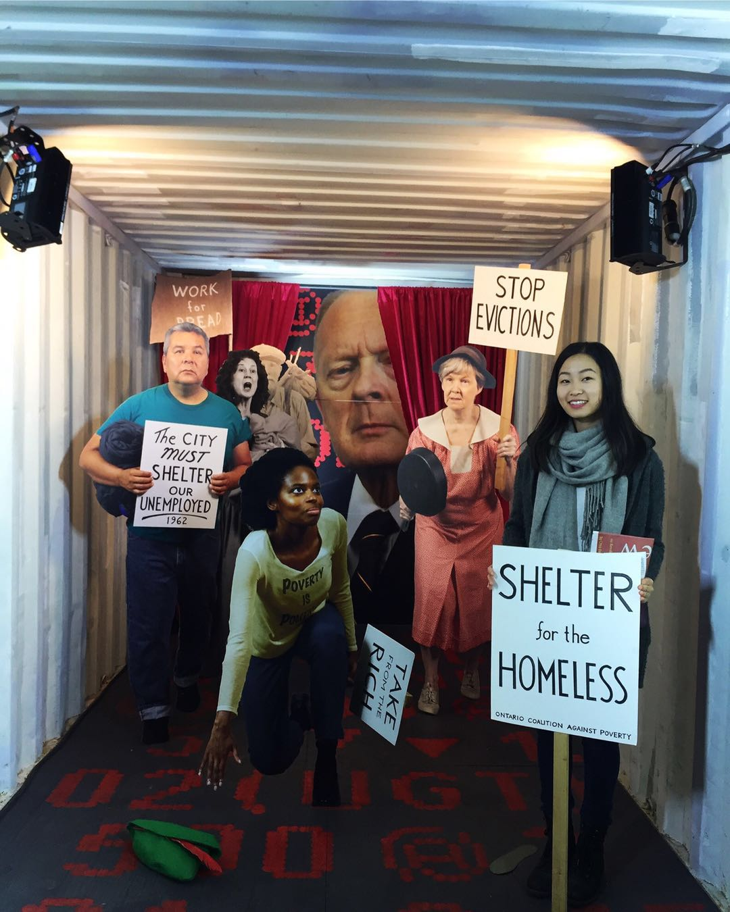
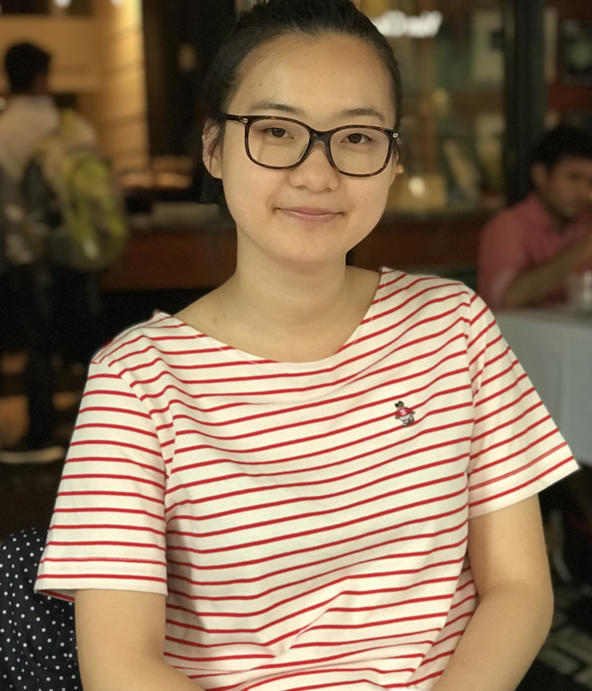
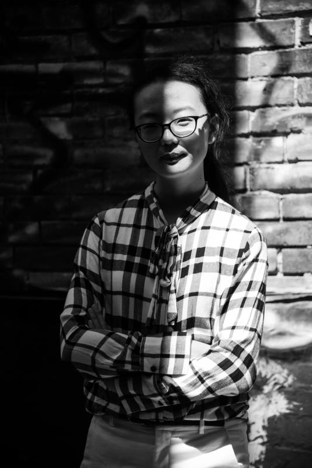

Meet the 2018-2019 Executive Team
Co-Presidents
Bonnie Yang
Co-President, 3rd Year
As this year's co-president, Bonnie oversees the day-to-day
operations and continued development of the club. She is a
passionate and caring individual who is keen on making TCCSA
even more diverse and attentive to the needs of all students.
She is currently a third year student in the Mathematical
Applications in Economics and Finance Specialist program as well
as the Trinity College Third-year Head of Non-Res. She hopes her
experiences in academia and the college community can provide
guidance to incoming students and those with similar
aspirations.
Charlie Huang
Co-President, 3rd Year
Charlie (Chengcheng) Huang studies in Financial Economics Specialist Program.
In his spare time he enjoys road cycling, modern musics and study of various markets.
He is currently in Research Opportunity Program on the subject of
behavioral economics and wishes to become an economist or professional manager.
黄成诚就读金融经济系（Financial Economics），2020届，平时喜欢自行车运动，
现代音乐以及各类市场研究。目前在学校官方研究项目研究行为经济学，
未来希望能成为一名经济学家或职业经理人。

Treasurer
Kevin Hong
Treasurer, Year
Bio...

Directors
Lara E
Creative Director, 3rd Year
Lara is a third-year Rotman Commerce student interested in visual art.
She is in charge of the posters and banners for TCCSA’s fun events.
She looks forward to meeting new Trin members next year! :)
Nancy Mao
Marketing Director, 2nd Year
As this year’s director of marketing, Nancy focuses mainly on
updating and advertising TCCSA’s events to all students. She is
a passionate individual who brings TCCSA close to the student
body by publications and notifications on both Wechat and
Facebook. Currently in her second year studying psychology and
art history, Nancy is also a tennis player and a lover for art
and music. She is looking forward to this upcoming year meeting
new faces and challenges.

Nancy Qiu
Internal Director, 2nd Year
Nancy is a second-year student from Vancouver, B.C. studying
mathematics at U of T. She was one of the First Year
Representatives in 2017-18. It is her pleasure to continue
assisting other executives to promote cultural diversity and
awareness as the Internal Director of TCCSA in the current
academic year.

Barry Feng
Logistics Director, 3rd Year
Bio...

John Song
Events Director, 2nd Year
Bio...
Bonnie Yang
Co-President, 3rd Year
As this year's co-president, Bonnie oversees the day-to-day operations and continued development of the club. She is a passionate and caring individual who is keen on making TCCSA even more diverse and attentive to the needs of all students.
She is currently a third year student in the Mathematical Applications in Economics and Finance Specialist program as well as the Trinity College Third-year Head of Non-Res. She hopes her experiences in academia and the college community can provide guidance to incoming students and those with similar aspirations.
Charlie Huang
Co-President, 3rd Year
Charlie (Chengcheng) Huang studies in Financial Economics Specialist Program. In his spare time he enjoys road cycling, modern musics and study of various markets. He is currently in Research Opportunity Program on the subject of behavioral economics and wishes to become an economist or professional manager.
黄成诚就读金融经济系（Financial Economics），2020届，平时喜欢自行车运动， 现代音乐以及各类市场研究。目前在学校官方研究项目研究行为经济学， 未来希望能成为一名经济学家或职业经理人。
Treasurer
Kevin Hong
Treasurer, Year
Bio...
Directors
Lara E
Creative Director, 3rd Year
Lara is a third-year Rotman Commerce student interested in visual art.
She is in charge of the posters and banners for TCCSA’s fun events.
She looks forward to meeting new Trin members next year! :)
Nancy Mao
Marketing Director, 2nd Year
As this year’s director of marketing, Nancy focuses mainly on
updating and advertising TCCSA’s events to all students. She is
a passionate individual who brings TCCSA close to the student
body by publications and notifications on both Wechat and
Facebook. Currently in her second year studying psychology and
art history, Nancy is also a tennis player and a lover for art
and music. She is looking forward to this upcoming year meeting
new faces and challenges.

Nancy Qiu
Internal Director, 2nd Year
Nancy is a second-year student from Vancouver, B.C. studying
mathematics at U of T. She was one of the First Year
Representatives in 2017-18. It is her pleasure to continue
assisting other executives to promote cultural diversity and
awareness as the Internal Director of TCCSA in the current
academic year.

Barry Feng
Logistics Director, 3rd Year
Bio...
John Song
Events Director, 2nd Year
Bio...
Lara E
Creative Director, 3rd Year
Lara is a third-year Rotman Commerce student interested in visual art. She is in charge of the posters and banners for TCCSA’s fun events. She looks forward to meeting new Trin members next year! :)
Nancy Mao
Marketing Director, 2nd Year
As this year’s director of marketing, Nancy focuses mainly on updating and advertising TCCSA’s events to all students. She is a passionate individual who brings TCCSA close to the student body by publications and notifications on both Wechat and Facebook. Currently in her second year studying psychology and art history, Nancy is also a tennis player and a lover for art and music. She is looking forward to this upcoming year meeting new faces and challenges.
Nancy Qiu
Internal Director, 2nd Year
Nancy is a second-year student from Vancouver, B.C. studying mathematics at U of T. She was one of the First Year Representatives in 2017-18. It is her pleasure to continue assisting other executives to promote cultural diversity and awareness as the Internal Director of TCCSA in the current academic year.
Barry Feng
Logistics Director, 3rd Year
Bio...
John Song
Events Director, 2nd Year
Bio...
Board of Trustees
Katherine Li
Trustee, 4th Year
Katherine Li is a fourth-year student at Trinity College
studying Cultural Anthropology and Art History. She is an active
volunteer in arts and cultural events and hopes to work for
cultural communications or social developments. As a witness of
TCCSA's establishment, Katherine will continue to be part of
TCCSA executive team during her last year as an undergrad. By
working for TCCSA, Katherine wants to encourage more Chinese
students to speak up their minds to the college and the people
outside Chinese communities.

Katherine Li
Trustee, 4th Year
Katherine Li is a fourth-year student at Trinity College studying Cultural Anthropology and Art History. She is an active volunteer in arts and cultural events and hopes to work for cultural communications or social developments. As a witness of TCCSA's establishment, Katherine will continue to be part of TCCSA executive team during her last year as an undergrad. By working for TCCSA, Katherine wants to encourage more Chinese students to speak up their minds to the college and the people outside Chinese communities.